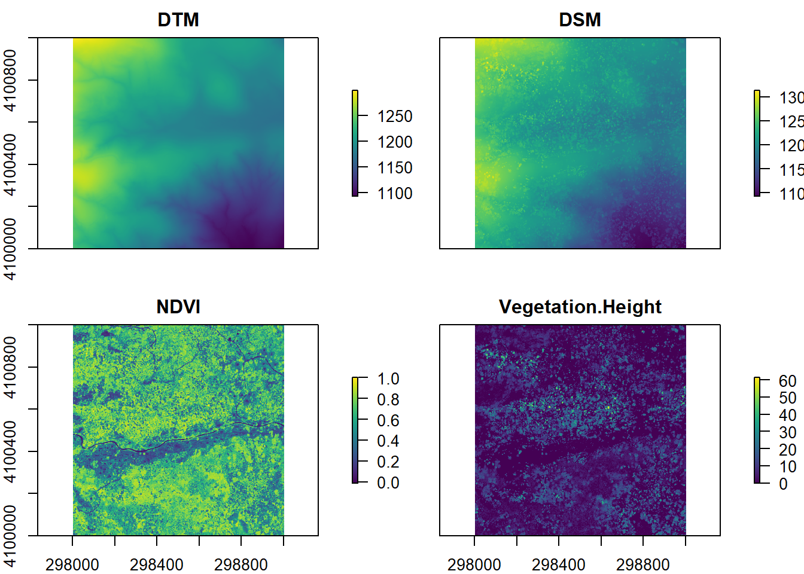
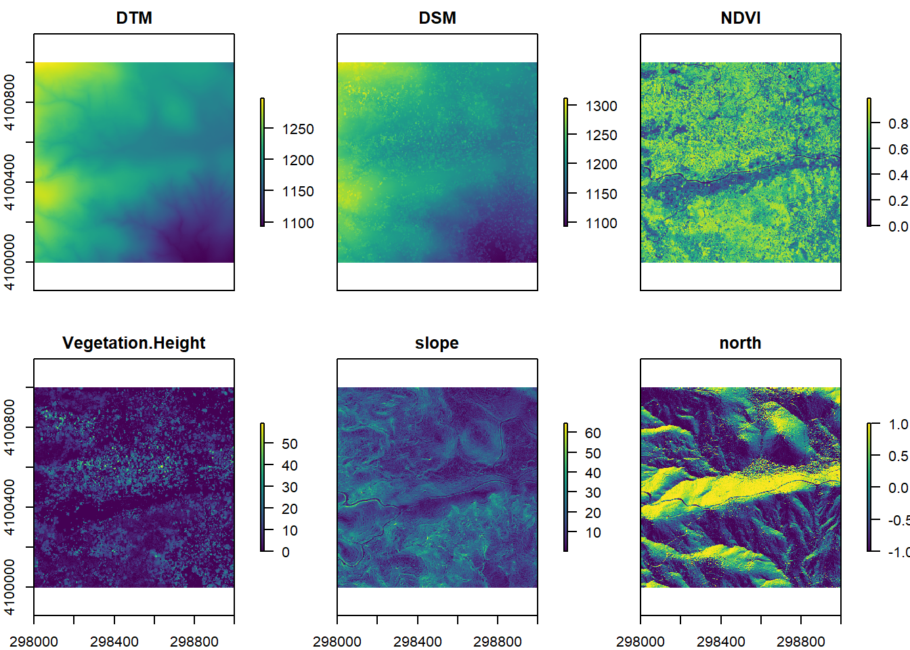
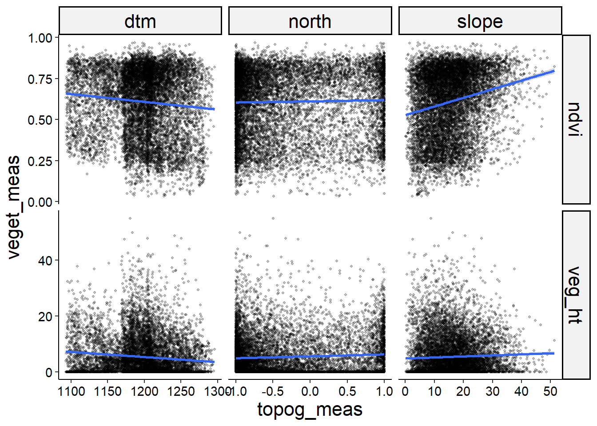

Learning Objectives
After completing this tutorial you should be able to
Download the 06_RemoteSensing project folder. Once you have downloaded it, unzip the project directory into your BI449 directory.
Your first step is creating a new R project in your project folder. To do this open Rstudio then use the drop down menu in the top right corner to select New Project and from there New Project in an existing directory. From there, navigate to and select the project folder create an R project. Remember, your Rproj sets the working directory so you need to make sure that it is in your project folder.
Next, open a new Rmd file using File > New File > R Markdown or the drop down menu of the green plus button below File and save it in your Remote Sensing project directory. Use the setup chunk to set your global settings for the document using the options you’ve learned about in the last few projects. Remember, you should always check your html document after it knits to make sure that everything has converted as expected, including your figures, bullet points etc. We are going to need some specific packages for mapping; if you have not already you will need to install the following115 Remember, you only need to do this once, so you should type these functions directly into the console rather than have a code chunk which will try to run every time you knit the document.
install.packages("rnaturalearthhires",
repos = "http://packages.ropensci.org",
type = "source")## Error in install.packages : Updating loaded packagesinstall.packages("ggspatial")## Error in install.packages : Updating loaded packagesWe will also need the package sf,rgdal, raster, and corrplot. If you are on a Mac and it asks you to install from source, say no.
Let’s load our packages so we can get started.
# load libraries
library(tidyverse)
library(janitor)
library(skimr)
library(rgdal)
library(raster)
library(ggplot2)
library(viridisLite)
library(corrplot)
# won't need this set of libraries
# unless you want to plot the final figure yourself
library(ggplot2)
library(sf)
library(ggspatial)
library(rnaturalearth)
library(rnaturalearthhires)
library(rnaturalearthdata)
# turn of sci notation
options(scipen=999)► Question 20.1
Watch this short introduction to the National Ecological Observatory Network (NEON) and read this overview of the field stations and domains withing the network of monitoring stations.
Briefly outline what NEON is, how it is designed, what data is being measured, and what the central goal is and how the design supports this mission.
Discuss the value of long-term monitoring stations and standardized data gathering.
The data set we are going to start out with is from the Sierra Nevada mountains in California from a region called Soaproot Saddle.
We are going to load three raster data sets.
► Question 20.2
Briefly describe how a raster data set encodes information.
Load Digital Terrain Model data (DTM).
dtm <- raster("data/NEON_D17_SOAP_DP3_298000_4100000_DTM.tif")► Question 20.3
Briefly describe what data the terrain model raster data set contains.
Load Digital Surface Model, LiDAR first returns, topography + vegetation
dsm <- raster("data/NEON_D17_SOAP_DP3_298000_4100000_DSM.tif")► Question 20.4
Briefly describe what data the surface model raster data set contains.
Load Normalized Difference vegetation index (NDVI)
ndvi <- raster("data/NEON_D17_SOAP_DP3_298000_4100000_NDVI.tif")► Question 20.5
Describe what NDVI measures and how it can be used to assess vegetation.
We can calculate the vegetation height as DSM - DTM.
veg_ht <- dsm - dtmNext, let’s stack the data so we can plot it all in the same plot
# create raster stack
all_data <- stack(dtm, dsm, ndvi, veg_ht)
# rename raster layers
names(all_data) <- c("DTM", "DSM", "NDVI", "Vegetation.Height")Now we can create maps for each of our raster files116 this may take a second to plot … you are processing a bunch of data!.
plot(all_data,
col = viridis(255))
We already have information on elevation, but let’s calculate slope and aspect as additional metrics to describe the topology.
We will use degrees as a measure for slope.
slope <- terrain(dtm, opt = "slope", unit = "degrees", neighbors = 8)For aspect we will calculate “northness” (cosine of aspect) which will read in radians117 Radian is the SI unit for measuring angles; it is a dimensionless value..
# calculate aspect
aspect <- terrain(dtm, opt = "aspect", unit = "radians", neighbors = 8)
# calculate northness
north <- cos(aspect)Let’s add these layers to our raster stack to make it easy to plot everything in a single plot.
all_data$slope <- slope
all_data$north <- northNow we can plot all six maps.
plot(all_data,
col = viridis(255))
Let’s consider what correlations we would expect to find based on these six maps.
► Question 20.6
Argue whether overall you think that vegetation patterns are influenced by topography based on these maps and list anything noteworthy you have observed about these maps.
► Question 20.7
Argue which topographic metrics you think should have a strong association with NDVI and describe what you would expect that relationship to look like.
► Question 20.8
Argue which topographic metric you think should have a strong association with vegetation height and describe what you would expect that relationship to look like.
First, lets convert our raster layers into data frames for easier use. We’ll start by creating an empty data frame with as many rows as there are cells in our raster objects. Then we can use the function extract() the entire extent of the raster layer, i.e. we are pulling out all the information for each pixel and putting it into a set of columns[^3]. The extent argument, tells R to pull out all the information in the raster object118 Recall, each column of a dataframe is a vector.
# create and empty dataframe for our data set
df <- as.data.frame(matrix(NA, nrow = ncell(dtm), ncol=0))
# extract vegetation height
df$veg_ht <- raster::extract(veg_ht, extent(veg_ht))
# extract ndvi
df$ndvi <- raster::extract(ndvi, extent(ndvi))
# extract dtm
df$dtm <- raster::extract(dtm, extent(dtm))
# extract slope
df$slope <- raster::extract(slope, extent(slope))
# extract aspect
df$north <- raster::extract(north, extent(north))
head(df) %>%
kable()| veg_ht | ndvi | dtm | slope | north |
|---|---|---|---|---|
| 7.8100586 | 0.8477020 | 1297.25 | NaN | NaN |
| 8.9599609 | 0.8142292 | 1297.36 | NaN | NaN |
| 7.5100098 | 0.8118778 | 1297.39 | NaN | NaN |
| 0.7000732 | 0.8314815 | 1297.35 | NaN | NaN |
| 0.8100586 | 0.7325861 | 1297.32 | NaN | NaN |
| 0.0000000 | 0.6941839 | 1297.20 | NaN | NaN |
Note, that we no longer have spatial information, however, values in the same row do correspond to the same pixel location in our raster object.
Because we have so much data, we will take a 1% subset of the data to decrease the computation power and time needed. Because our data set is so large (1 Million rows!), we would expect that a random subset is representative of the relationships as a whole.
dplyr::slice_sample() can be used to specify the proportion of rows that you would like to retain. The function will return a random subsample.
# set seed for reproducibility
set.seed(42)
df_sub <- df %>%
slice_sample(prop = 0.01)Let’s take a look at the relationship between vegetation variables and topographic variables. To do this efficiently using the tidyverse principles, need to pivot our data set. Ultimately, we want to have a data set with one column with our topography parameters, one with the topography measurements, one with vegetation variables and one with measurements.
df_plot <- df_sub %>%
pivot_longer(names_to = "topog_param", values_to = "topog_meas", 3:5) %>%
pivot_longer(names_to = "veget_param", values_to = "veget_meas", 1:2)
ggplot(df_plot, aes(x = topog_meas, y = veget_meas)) +
geom_point(alpha = 0.25, size = .75) +
facet_grid(veget_param ~ topog_param, scales = "free") +
geom_smooth(method = "lm")
► Question 20.9
Use the scatter plots to make predictions about statistical relationships. Consider whether any of these plots look like they are visualizing strong relationships.
Argue whether you think larger data sets make it easier or harder to identify distinct relationships “by eye.”
Page built: 2021-10-26 using R version 4.0.2 (2020-06-22)